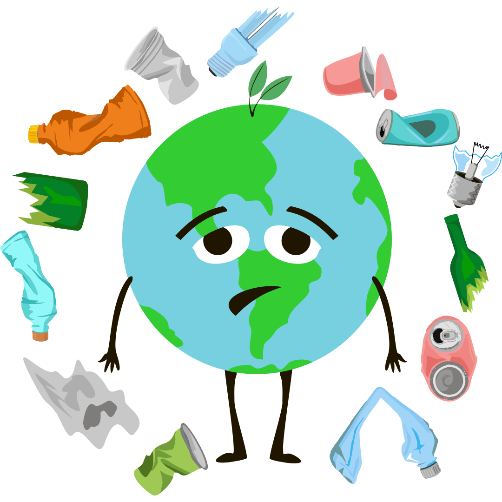
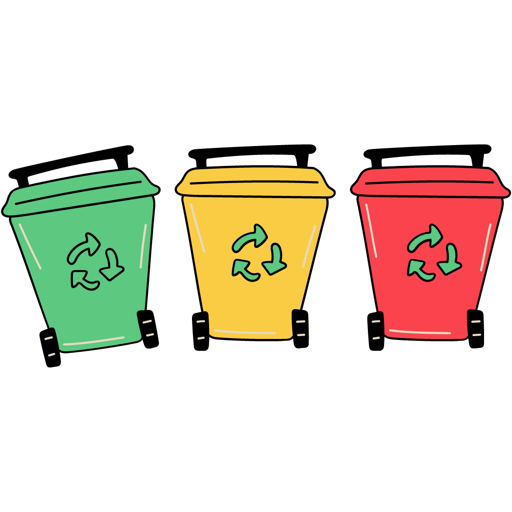
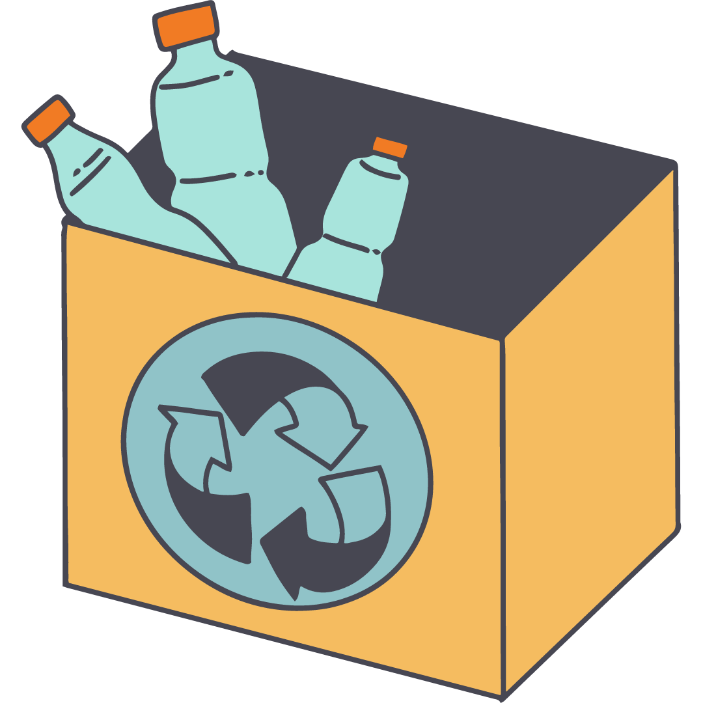

Reduce
Reuse
Recycle
What are the 3 R's?

The 3 R's—Reduce, Reuse, and Recycle—are important for environmental sustainability and waste management. They contribute to resource conservation, minimize waste generation, save energy, offer economic benefits, protect biodiversity and ecosystems, mitigate climate change, and foster community awareness. By adopting these principles, individuals and societies can make a positive impact on the environment, reduce pollution, and work towards a more sustainable and responsible future.